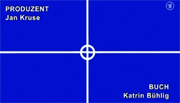

Der MDR nennt seit 2003 die Drehbuchautoren der TATORTe auch noch mal im Abspann, hier bei: Schwarzer Peter (2009)- Innerhalb der ARD hat das Seltenheitswert
TATORT-Abspann: "Der falsche Weg"
Dass nicht nur im Vorspann, sondern auch im Abspann des letzten Sonntags-TATORT "Herz aus Eis"die Drehbuchautorin Dorothee Schön genannt wurde, hat Seltenheitswert: Denn die meisten Drehbuchautoren werden dort überhaupt nicht genannt; den meisten scheint dies nicht wichtig. Damit kürzt die ARD in den 40 Jahren TATORT-Geschichte den Abspann immer ein Stück weiter - Ein weiteres Kapitel in Sachen "Abspannverstümmelung".
In einem Interview mit Oliver Schütte und Frank Zeller (Podcast "Stichwort Drehbuch", herausgegeben vom Verband Deutscher Drehbuchautoren e.V.) mit TATORT-Autorin Dorothee Schön spricht diese von einer ARD-weiten Regelung, dass Drehbuchautoren im Abspann eines TATORTs nicht mehr genannt werden sollen.
"Eine echte Katastrophe" Vor dem Hintergrund ihrer Sehgewohnheiten als Zuschauerin findet Dorothee Schön diese Situation für ihren Berufsstand schlicht "verheerend", wie sie in dem Interview erklärt. Denn das Interesse für die Frage, wer das Buch zu einem Film beigesteuert hat, komme ja meist erst nach dem Film auf, argumentiert die Autorin - "und dann steht da nichts". Und auch die oft griffbereite Fernsehzeitschrift schweige sich über den Drehbuchautor aus, so Schön.
"Bis in die höchsten Instanzen" gekämpft Die Drehbuchautorin habe sich - als die Autorennennung im Abspann auch bei ihr abgeschafft werden sollte - vehement dagegen zur Wehr gesetzt, "bis in die höchsten Instanzen", wie sie erzählt. Sich auf ihre alten Konditionen berufend, die Dorothee Schön eine Autorennennung zusicherten, habe man schließlich zähneknirschend zugestimmt, sie als "Altfall" auch weiterhin im Abspann zu nennen.
Gleichzeitig wünscht sich die erfolgreiche Drehbuchautorin Dorothee Schön von ihren Kollegen, dass diese sich gegen die gängige ARD-Praxis öfter zur Wehr setzen und massiver einfordern würden, im Abspann genannt zu werden. Die TATORT-Drehbuchautorin glaubt, dass sich der Kampf lohnt und ist sich zugleich sicher, dass eine TATORT-Redaktion einen Drehbuchvertrag nicht von dieser Frage abhängig machen wird und den Auftrag deshalb platzen lassen wird. Natürlich sei daskein einfacher Fall, so Schön, doch jeder Kollege könne sich doch auf sie und den "Präzedenzfall" berufen. Schön: "Ich wäre froh, da nicht allein zu sein".
Ein Fünftel der Abspänne enthalten Angaben zum Drehbuchautoren Ganz alleine ist die Autorin da zwar nicht, aber eine Autorennennung im Abspann hat tatsächlich Seltenheitswert. Schaut man sich nur die TATORTe des Jahres 2008 und die gelaufenen Folgen von 2009 an, so wird deutlich: Nur etwa 20% - 8 von insgesamt 38 TATORT-Folgen - nennen den Drehbuchautor im Abspann (siehe Tabelle). Damit kristalliert sich bei dem Blick auf diese wenigen TATORTe heraus, dass in 2008 und 2009 nur der
Angaben im Vorspann können untergehen Der MDR nennt seine Drehbuchautoren bereits seit 2003 kontinuierlich im Abspann, ebenso wie Radio Bremen. Der kleine Sender aus Bremen beschränkte die Nennung im Abspann 2009 und 2003 nicht nur auf die Schriftstellerin Thea Dorn, sondern auf alle anderen Autoren. Der Saarländische Rundfunk hat in den TATORTen 2007 und 2008 ebenfalls die Autoren im Abspann ausgewiesen.
Ansonsten: Alle anderen Sender schweigen sich im Abspann über den Drehbuchautoren grundsätzlich aus, selbst wenn der stets aufgeführte Regisseur gleichzeitig für das Drehbuch verantwortlich war: der Credit "Buch" taucht dort nie auf.
Dieser taucht - wie bei allen Sendern - nur in den Anfangsszenen des Krimis auf . Wo er eben unterzugehen droht, wie Dorothee Schön meint: Wer interessiert sich schon vor dem Film, wer ihn geschrieben hat?
Für Dorothee Schön ist das Vorgehen der Sender jedenfalls nicht konsequent, da solle man lieber gar keinen Abspann machen. Mehr noch: Ausgerechnet die Urheber aus dem Abspann rauszustreichen, sei der falsche Weg...
Francois Werner
In einem Interview mit Oliver Schütte und Frank Zeller (Podcast "Stichwort Drehbuch", herausgegeben vom Verband Deutscher Drehbuchautoren e.V.) mit TATORT-Autorin Dorothee Schön spricht diese von einer ARD-weiten Regelung, dass Drehbuchautoren im Abspann eines TATORTs nicht mehr genannt werden sollen.
"Eine echte Katastrophe" Vor dem Hintergrund ihrer Sehgewohnheiten als Zuschauerin findet Dorothee Schön diese Situation für ihren Berufsstand schlicht "verheerend", wie sie in dem Interview erklärt. Denn das Interesse für die Frage, wer das Buch zu einem Film beigesteuert hat, komme ja meist erst nach dem Film auf, argumentiert die Autorin - "und dann steht da nichts". Und auch die oft griffbereite Fernsehzeitschrift schweige sich über den Drehbuchautor aus, so Schön.
"Bis in die höchsten Instanzen" gekämpft Die Drehbuchautorin habe sich - als die Autorennennung im Abspann auch bei ihr abgeschafft werden sollte - vehement dagegen zur Wehr gesetzt, "bis in die höchsten Instanzen", wie sie erzählt. Sich auf ihre alten Konditionen berufend, die Dorothee Schön eine Autorennennung zusicherten, habe man schließlich zähneknirschend zugestimmt, sie als "Altfall" auch weiterhin im Abspann zu nennen.
Gleichzeitig wünscht sich die erfolgreiche Drehbuchautorin Dorothee Schön von ihren Kollegen, dass diese sich gegen die gängige ARD-Praxis öfter zur Wehr setzen und massiver einfordern würden, im Abspann genannt zu werden. Die TATORT-Drehbuchautorin glaubt, dass sich der Kampf lohnt und ist sich zugleich sicher, dass eine TATORT-Redaktion einen Drehbuchvertrag nicht von dieser Frage abhängig machen wird und den Auftrag deshalb platzen lassen wird. Natürlich sei daskein einfacher Fall, so Schön, doch jeder Kollege könne sich doch auf sie und den "Präzedenzfall" berufen. Schön: "Ich wäre froh, da nicht allein zu sein".
Ein Fünftel der Abspänne enthalten Angaben zum Drehbuchautoren Ganz alleine ist die Autorin da zwar nicht, aber eine Autorennennung im Abspann hat tatsächlich Seltenheitswert. Schaut man sich nur die TATORTe des Jahres 2008 und die gelaufenen Folgen von 2009 an, so wird deutlich: Nur etwa 20% - 8 von insgesamt 38 TATORT-Folgen - nennen den Drehbuchautor im Abspann (siehe Tabelle). Damit kristalliert sich bei dem Blick auf diese wenigen TATORTe heraus, dass in 2008 und 2009 nur der
- Mitteldeutsche Rundfunk (MDR),
- Radio Bremen (RB) und der
- Saarländische Rundfunk (SR)
Angaben im Vorspann können untergehen Der MDR nennt seine Drehbuchautoren bereits seit 2003 kontinuierlich im Abspann, ebenso wie Radio Bremen. Der kleine Sender aus Bremen beschränkte die Nennung im Abspann 2009 und 2003 nicht nur auf die Schriftstellerin Thea Dorn, sondern auf alle anderen Autoren. Der Saarländische Rundfunk hat in den TATORTen 2007 und 2008 ebenfalls die Autoren im Abspann ausgewiesen.
Ansonsten: Alle anderen Sender schweigen sich im Abspann über den Drehbuchautoren grundsätzlich aus, selbst wenn der stets aufgeführte Regisseur gleichzeitig für das Drehbuch verantwortlich war: der Credit "Buch" taucht dort nie auf.
Dieser taucht - wie bei allen Sendern - nur in den Anfangsszenen des Krimis auf . Wo er eben unterzugehen droht, wie Dorothee Schön meint: Wer interessiert sich schon vor dem Film, wer ihn geschrieben hat?
Für Dorothee Schön ist das Vorgehen der Sender jedenfalls nicht konsequent, da solle man lieber gar keinen Abspann machen. Mehr noch: Ausgerechnet die Urheber aus dem Abspann rauszustreichen, sei der falsche Weg...
Francois Werner